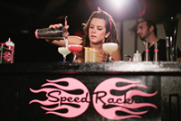
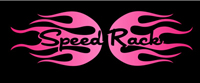
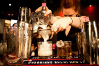
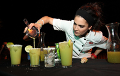
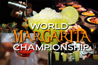
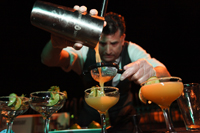
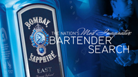
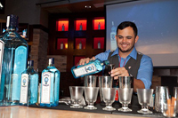

America's Fastest Female Bartender
Speed Rack is a competition created by and for female bartenders and raises money for breast cancer awareness. Speed Rack is a national cocktail competition featuring top female bartenders in key cocktail markets, putting them head to head in round robin style timed and judged challenges. It is the first competition to highlight the up and coming generation of strong women in the spirits industry.
 |
 |
 |
Each local winner receives an honorarium to compete in the finals and the opportunity to be crowned Miss Speed Rack USA. Proceeds go to support breast cancer related charities. In thier inaugural year (2011-2012), Speed Rack raised over $69,000 for: NBCF and SHARE.
World Margarita Championship
Known as one of Tucson Arizona’s signature events, The World Margarita Championship has continued to grow from its first year at Cuvee Bistro where 100+ guests crowded into the bar, to increasingly larger venues including the patio at Maynard’s Market and Kitchen, and now this year to the grounds of the Tucson Museum of Art where over 1000 guests can comfortably attend and enjoy the event. The World Margarita Championship features 16 mixologists including 15 from Tucson Original member restaurants, and one from Mexico, all competing for the Judges Award and the People’s Choice Award using tequila provided by Tequila Penasco, Patron, Sauza, Avion, and el Tesoro.
 |
 |
 |
The fun begins when the first two mixologists take to the demonstration stage to create their version of the classic margarita for the panel of judges. Throughout the evening, guests are invited to sample all 16 margarita entries as well as food from 13 Tucson Original restaurants. Votes submitted by attendees will be tabulated at the end of the evening to determine the winner of the 2012 People’s Choice Award.
World’s Most Imaginative Bartender
The Bombay Sapphire Worlds Most Imaginative Bartender programme is a global bartending competition which celebrates the power of imagination in cocktail making. The aim is to inspire the endless creativity that is at the heart of great cocktail making. Imagination has long been at the heart of the Bombay Sapphirestory - from its artisan distillation process, the careful selection of the 10 exotic botanicals through to the inspired blue bottle that is recognised the world over.
 |
 |
 |
Bombay Sapphire held its inaugural global competition in May 2012, in Morocco where the worthy winner - David Wolowidnyk, Canada - presented his Moroccan inspired cocktail "Beldi" which means natural. David was selected from thousands of contestants overall and eight finalists, he took part in a four-day experience, visiting the Moroccan home of one the Bombay Sapphire botanicals - coriander. The experience culminated with a cocktail competition where each bartender presented a bespoke imaginative cocktail - inspired by the cultural experiences they had experienced throughout the trip.